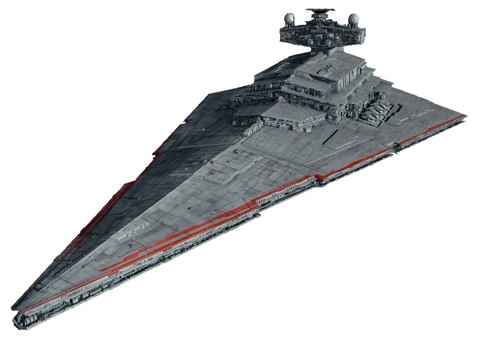

|
 Xyston csatahajó55 000 000
|
Xyston csatahajó történeteA Xyston-osztályú csillagromboló és csatahajó, más néven Xyston-osztályú romboló csatahajó, a Végső Rend csillagrombolója, a Sith csillagromboló csatahajó, Sith romboló, vagy egyszerűen csak "bolygóromboló", a Sith Eternal's Final Order flottája által használt csillagromboló típus volt. A Xyston-osztályú csillagrombolókat a Galaktikus Birodalom idejétől kezdve építették az Exegol hajógyárakban. Felszerelése
|